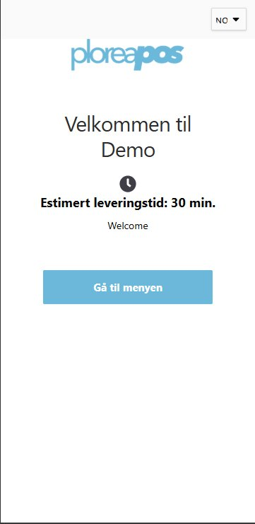

1
Steg 01 / 07
Velkomstskjerm etter QR-skanning
Kunden skanner QR-koden på bordet og lander rett på en ren velkomstskjerm med Plorea-logo og tydelig pulsende CTA. Ingen app, ingen innlogging, null friksjon.
- Lokasjonsnavn og språkvelger hentes fra Ops Control
- Estimert leveringstid kan vises dynamisk
- Én tydelig primær CTA – stort treffområde
- Branding fra Plorea Design System
